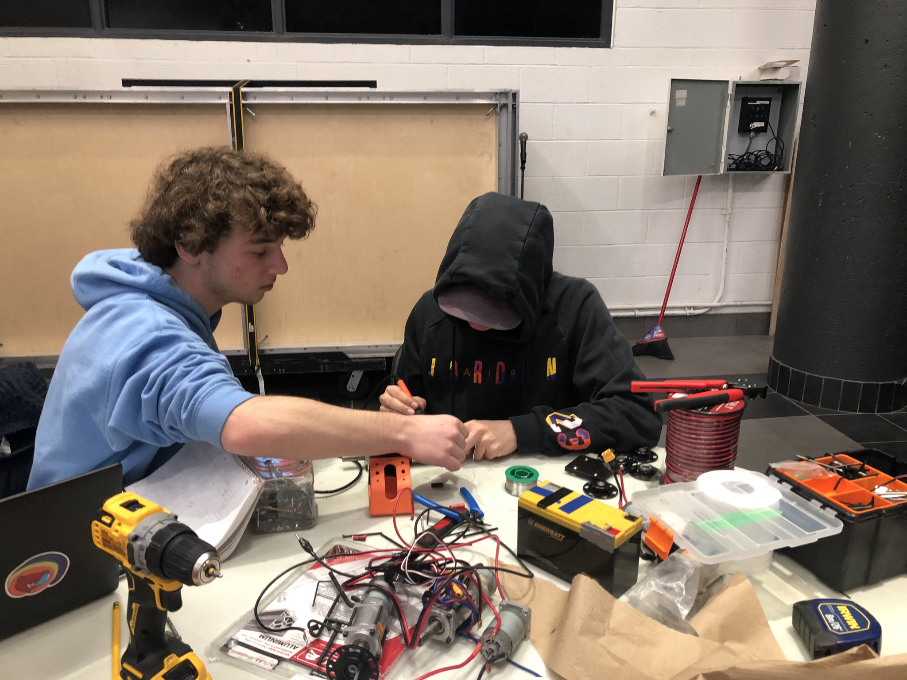

Robot

Le robot qui participera à la compétition CRC de cette année est d'une conception simple
mais efficace. Il est construit sur une base carré et un système de courroies et de poulies
soulève les pièces de jeu, guidées par des barres en aluminium. Le tout maximise la
stabilité du robot. La pince peut placer les pièces de jeu sur différentes stations en
tournant autour de l'axe x, ce qui permet une grande polyvalence.
Rules
- Initial: 762mm x 610mm x 1220mm.
- Lors du jeu: Extensible jusqu'à 1067mm x 762mm x 1220mm.
Dimensions:
- Doit utiliser des batteries CRCvolt et des composants approuvés.
- Maximum de 8 moteurs ; aucune modification des composants électriques.
Système d'alimentation électrique :
- les robots doivent passer des certifications techniques et de sécurité.
- Les modifications doivent faire l'objet d'une nouvelle certification avant la compétition.
Certifications:
Une fois que la planification du robot a été réalisée, nous sommes passés à
l'approvisionnement de tous les composants et matériaux nécessaires. Pour ce faire, nous
avons dû sélectionner et nous procurer des pièces avec soin, tout en réutilisant des pièces
de projets antérieurs. Après avoir rassemblé les fournitures nécessaires, nous avons entamé
le processus de construction. Il s'agissait de construire et de tester le robot. Ce travail
a été réalisé principalement pendant les vacances et a jeté les bases pour la réussite de
notre projet.



L'un des problèmes rencontrés lors de la construction du robot a été un manque d'expérience
avec le logiciel de conception CAO, dont la courbe d'apprentissage est abrupte. Certaines
parties du robot nécessitaient des pièces imprimées en 3D, et il a fallu beaucoup de temps
pour les concevoire. De nombreux tutoriels YouTube et guides Internet ont permis à l'équipe
du robot d'apprendre à utiliser Fusion 360.